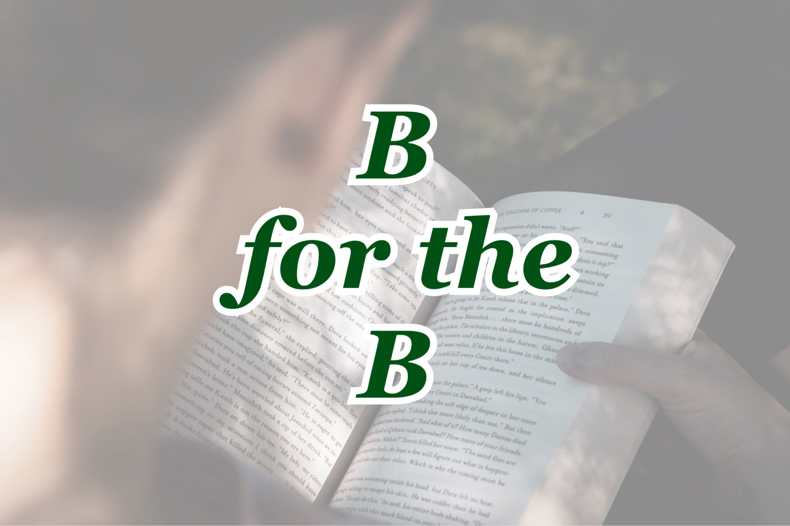
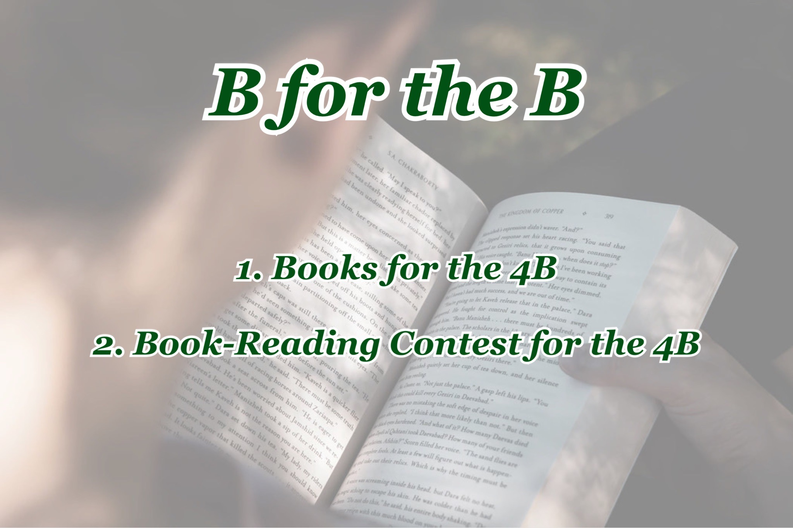

비폴더비(B for the B)는 다음카페 여성시대의 비혼방에서 진행되는 2021 비혼방 독서 콘테스트이다.

대회 이름인 비폴더비(B for the B)의 뜻은 다음과 같다.
비폴더비 진행자는 2021년 2월부터 11월까지 한 권씩 총 열 권의 독서를 함께하며, 독후감을 올리고 자유로이 토론하는 비혼 여성 간 독서대회의 장을 열고자 한다고 밝혔다.
현재까지 정해진 비폴더비의 도서 목록은 다음과 같다.